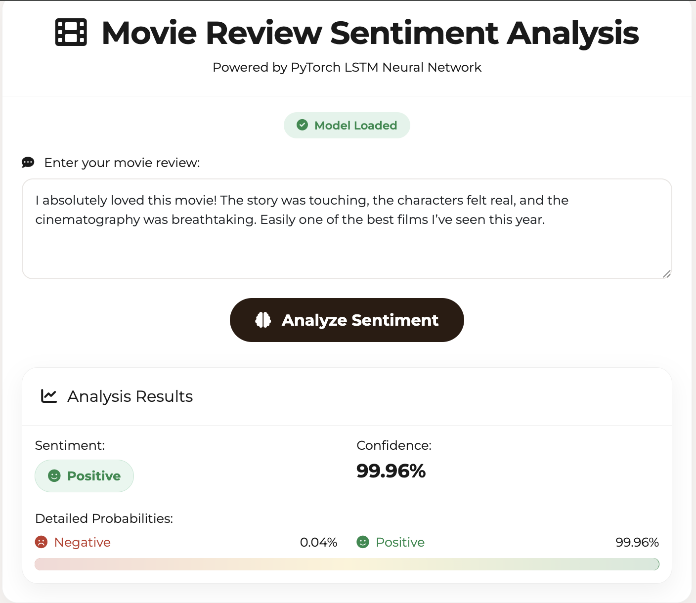

Back to Projects
MLOps & Distributed ML
Movie Review Sentiment Analysis (MapReduce + ML)

Overview
A comprehensive MLOps project for sentiment analysis of movie reviews using Apache Spark MapReduce and machine learning. Includes Spark-based TF-IDF feature extraction, MLlib models (Naive Bayes, Logistic Regression, Random Forest), PyTorch deep learning variants (LSTM/Transformer/BERT), MLflow tracking, Docker, and Makefile-driven workflows.
Challenges & Solutions
Designing a unified pipeline supporting both Spark MLlib and PyTorch while maintaining reproducibility and comparability. Implementing TF-IDF at scale, robust experiment tracking with MLflow, and containerized, repeatable training/inference flows. Balancing performance and resource usage across distributed and GPU workloads.
Technical Achievements
- Hybrid Pipeline: Unified Spark MapReduce feature engineering with parallel PyTorch deep learning path
- Model Zoo: Implemented Naive Bayes, Logistic Regression, Random Forest, plus LSTM/Transformer/BERT variants
- Experiment Tracking: Full MLflow integration with metrics, params, and artifact logging
- Reproducibility: Makefile + Docker workflows for install, train, evaluate, and predict
- Scalability: Distributed TF-IDF and training with Spark, GPU-ready PyTorch training scripts
- CI-ready Structure: Config-driven scripts, tests, and modular code layout for extension
Technologies Used
Apache Spark
Python
PyTorch
MLflow
Docker
Make